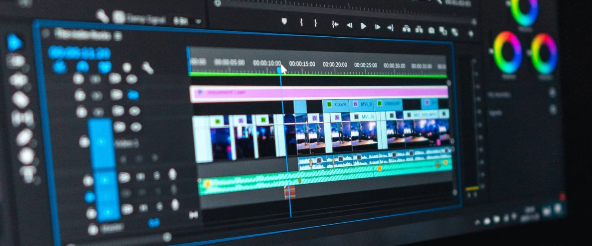

Video editing refers to the process of transforming a normal and simple video into a unique and engaging piece. It is utilized across various fields and has significant scope in many industries. Numerous software applications are available for video editing, some designed for computers and others for mobile devices. Certain editing software requires powerful computers with high specifications, making them unsuitable for standard computers or mobile phones. Consequently, users may need to invest in high-end and expensive hardware for advanced video editing tasks.
Video editing is used in many feilds such as movie making, YouTube video making and much more. Mostly companies hire video editor for their video making.
Video editing was founded in 1924.